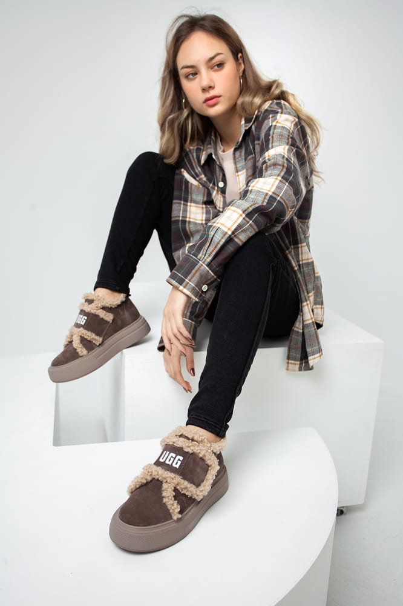
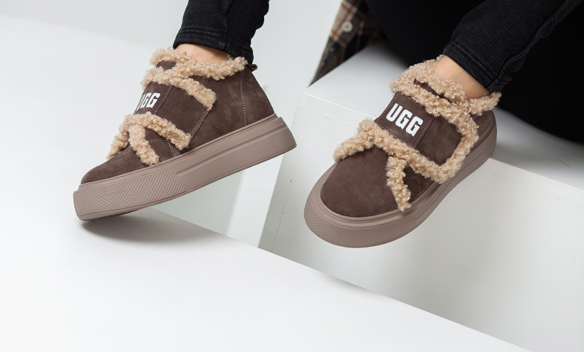

<section class="advnatage__section" id="advantage">
    <div class="container">
        <div class="advantage__section-wrapper">
            <p class="tag">Переваги<sup>[01]</sup></p>
            <h2 class="advantage__section-title">
                Чому обирають <br>
                UGG Women’s Sity Trainer?
            </h2>
            <div class="advantage__content">
                <div class="advantage__nav">
                    <button type="button" data-nav="1" class="advantage__nav-item active">
                        Комфорт<sub>{01}</sub>
                    </button>
                    <button type="button" data-nav="2" class="advantage__nav-item">
                        Тепло<sub>{02}</sub>
                    </button>
                    <button type="button" data-nav="3" class="advantage__nav-item">
                        Стиль<sub>{03}</sub>
                    </button>
                    <button type="button" data-nav="4" class="advantage__nav-item">
                        Якість<sub>{04}</sub>
                    </button>
                    <button type="button" data-nav="5" class="advantage__nav-item">
                        Затишок<sub>{05}</sub>
                    </button>
                    <button type="button" data-nav="6" class="advantage__nav-item">
                        Захист<sub>{06}</sub>
                    </button>
                </div>
                <h3 class="advantage__title">
                    <span class="advantage__title-1 active">
                        Взуття забезпечує максимальну зручність навіть при тривалому носінні.
                    </span>
                    <span class="advantage__title-2">
                        Натуральне хутро зберігає тепло навіть при низьких температурах.
                    </span>
                    <span class="advantage__title-3">
                        Сучасний дизайн, який підходить для будь-якого зимового образу.
                    </span>
                    <span class="advantage__title-4">
                        Високоякісні матеріали гарантують <br>
                        надійність і довговічність.
                    </span>
                    <span class="advantage__title-5">
                        М'якість і природний комфорт для ідеального зимового взуття.
                    </span>
                    <span class="advantage__title-6">
                        Підошва з поліуретану забезпечує захист від вологи, холоду та ковзання.
                    </span>
                </h3>
                <div class="advantage__left">
                    
                    <p class="advantage__left-text">
                        Висока якість і натуральність матеріалів для вашого комфорту
                    </p>
                </div>
                
            </div>
            <div class="advantage__bottom">
                <p class="advanatge__info">
                    Знижка <span>-300 грн на другу пару</span> в замовленні!
                </p>
                <a href="#card" class="order__btn">
                    <span>Купити зараз</span>
                </a>
            </div>
        </div>
    </div>
</section>